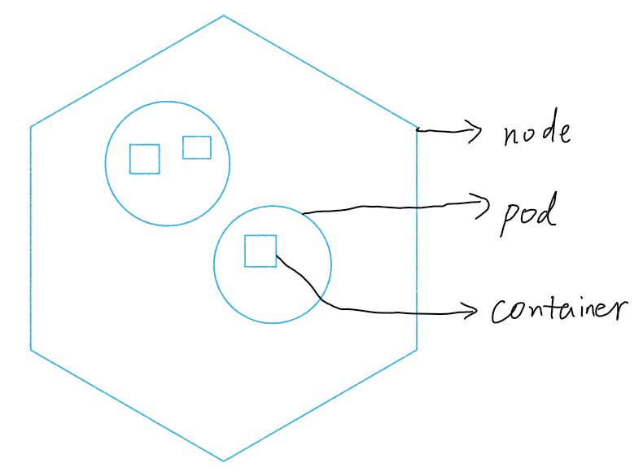

先推荐一个靠谱的网站：鹏飞的在线书
再推荐一本靠谱的书：Kubernetes权威指南
接触 Kubernetes 两个多月，对其中的架构和原理的理解一步步加深。因为概念实在太多了，如果不是实际用到，那么概念性的东西是很难记忆和消化的。
写本博客的目的是为了加深印象，至于具体的描述可以自行看书，也可以自己实践。写得不好的也请多多指教。
Kubernetes 解决了架构搭建的麻烦，让程序员可以专心做服务的开发。
先来说说最基本的概念：Node, Pod, Container.

Node
如果实验室有集群或者用过云服务，那么对于结点这个概念就不会陌生。Node 是最基础的计算资源，之后我们要介绍的 Pod Container 都跑在 Node 上。大量的 Node 可以组成 Cluster，向外提供服务资源，用户通过 NodePort 来访。对于用户而言，Node 的状态往往是透明的。用户只需要关心他起的服务。
对于 K8S 而言，有两类结点：
- master 用于管理集群，上面起的服务有：kube-apiserver, controller-manager, scheduler, etcd
- node 工作节点，上面起的服务有：kube-proxy, kubectl
Pod
一个 Node 上面可以跑多个 Pod。Pod 的状态信息是对用户可见的。可以把相关的 container 都放在同一个 pod 里方便传消息。并且每个 Pod 都有 label 信息，通过 label selector 可以对 pod 进行批量操作。
Container
如果用过 Docker 就知道 Container 是把特定的镜像拉取下来，比如 Nginx、Mysql等，即拉即用。
Service
对于外部用户而言，可以直接访问 NodeIP 来获取服务。但对于内部而言，pod 并不是固定，它时而会创建，时而会毁灭，时而会扩建。如何知道 pod 的固定 IP 呢？Service 就是用来做这件事的。它把 pod 和固定的内网 IP 映射起来，想知道 IP 的时候就去问它取，便于 pod 之间的相互访问。也有最新的 add-on，建立了一个内部的 DNS，这样直接通过名字就可以直接连到 pod 了。
外部 <-> || Node IP -> service -> pod IP ||
frontend pod -> service -> label selector -> multiple backend pod
Replication Controller
刚刚说过 pod 是会创建和毁灭的。正是 RC 实时监控着 pod 的状态，保证 pod 和期望的状态所匹配。如果有 pod close，则立马新建服务。所以一开始记得要给 RC 进行设置，告诉它你的期望。资源的期望状态都会保存在 etcd 库中，与实际资源状态相比较，RC 自动控制和纠错。